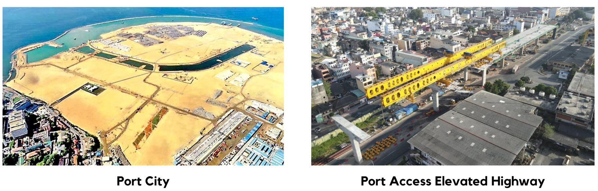

<html>
<title> Introduction </title>
</html>

<body>
<center><h1> Introduction </h1>
<h2> Considerations of River Sand </h2>
<p> The demand for concrete, the cornerstone of modern construction, has surged in tandem with global urbanization and infrastructure development.
 The key component of concrete, fine aggregate, traditionally relies heavily on river sand.</br>
 However, the unsustainable extraction of river sand has led to environmental concerns, ecological imbalance, and depletion of this finite resource. </p>
 


<h2> Alternatives of River Sand </h2>
<p> This research focuses on the utilization of two promising alternatives—M-sand and sea sand—as substitutes for conventional river sand in concrete production. </br>
 M-sand, produced by crushing rocks and quarry stones to the desired size, presents an eco-friendly alternative to river sand, reducing the environmental impact associated with sand mining. </br>
Sea sand, readily available in abundance, offers an additional source with the potential to alleviate the pressure on riverbeds. </br>
The choice of fine aggregate significantly influences the properties of concrete, including its strength, durability, and workability. Therefore, a comprehensive understanding of how M-sand and sea sand perform in comparison to river sand is imperative for ensuring the sustainability and resilience of concrete structures.
This research aims to assess the durability of concrete mixes incorporating M-sand and sea sand, providing valuable insights for the construction industry's transition towards environmentally conscious and resource-efficient practices.</p>
 
 
 
 <p> Sea sand, sourced from local waters, takes center stage in the construction of the prestigious Port City, a testament to its utility in large-scale infrastructure projects. Meanwhile, M-Sand, a manufactured alternative, finds application in the construction of the Port Access Elevated Highway, showcasing its efficacy in enhancing the structural integrity of critical transportation routes. </br>

It's noteworthy that these projects represent just a fraction of the extensive applications of sea sand and M-Sand in Sri Lanka. The versatility and reliability of these materials have led to their widespread adoption across a spectrum of construction initiatives, reflecting the confidence placed in their performance and suitability for diverse engineering requirements. </br>
 
 
 
<h5> <a href = " Ayya.html "> Go to Homepage</a> </h5>
 
 
 

</center>
</body>
</html>